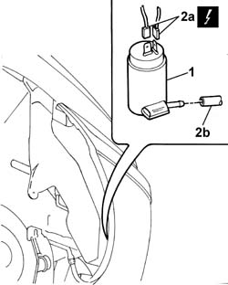

5050B20 windscreen washer electrical pump - r+r
- Path
- Procedures > 50 AUXILIARY UNITS > 5050 SCREEN WASHERS AND HEADLAMP WASH/WIPE > 5050B windscreen wash/wipe > 5050B20 windscreen washer electrical pump - r+r
- Kind
- repair procedure (removal / refitting; the operation number is the code)
- Applies to
- all engines; all production periods
- Interactive page
- https://sloeber94.github.io/elrnDB-fDbl/en/#/2584858
Applies to: all engines; all production periods; only with equipment: Cargo trim level
 Removing
Removing
 Refitting
RefittingPlace the car on a ramp.
Disconnect the battery negative terminal.
Position a suitable container for collecting the windscreen washer fluid.
Op. 4450B04 RIGHT FRONT WHEEL - R.R.
Op. 7055B54 PROTECTION/GUARD UNDER ENGINE - R.R.
Op. 7055B64 ENGINE COMPARTMENT DUST PROTECTION IN FRONT WHEEL ARCH LINER (ONE) LEFT OR RIGHT - R.R.
1. Release the electric pump from its housing and collect the windscreen washer fluid in the special container.
2. Disconnect the electrical connector (2a) for the electric pump and the windscreen washer fluid supply pipe (2b).
Name | Connector | |
|---|---|---|
2a | Windscreen/rearscreen electric washer pump motor | See N22 WINDSCREEN/REARSCREEN ELECTRIC WASHER PUMP MOTOR ( FRONT ) |

Applies to: all engines; all production periods; only with equipment: Cargo trim level
Refitting
RemovingFit the electric pump in its housing.
Connect the electrical connector for the electric pump.
 | Name | Connector |
|---|---|---|
- | Windscreen/rearscreen electric washer pump motor | See N22 WINDSCREEN/REARSCREEN ELECTRIC WASHER PUMP MOTOR ( FRONT ) |
Connect the windscreen washer fluid supply pipe to the electric pump.
Op. 7055B64 ENGINE COMPARTMENT DUST PROTECTION IN FRONT WHEEL ARCH LINER (ONE) LEFT OR RIGHT - R.R.
Op. 7055B54 PROTECTION/GUARD UNDER ENGINE - R.R.
Op. 4450B04 RIGHT FRONT WHEEL - R.R.
Top up the windscreen washer fluid level.
Connect the negative battery terminal and remove the vehicle from the lift.
Topics linked from this page (4)
- 4450B04 right front wheel r r
- 7055B54 under-engine guard - r r
- 7055B64 Engine compartment DUST shield in front wheel arch (one), left or right - R.R.
- N22 WINDSCREEN/REARSCREEN ELECTRIC WASHER PUMP MOTOR ( FRONT )